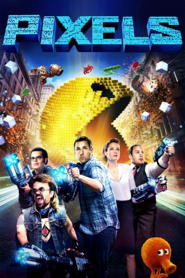

gesehen am 11.11.2016
gesehen am 11.11.2016 
 IMDB-Wertung: 5.6 / 10
IMDB-Wertung: 5.6 / 10  Metascore:
Metascore: 
Außerirdische nutzen real gewordene Versionen von Kultfiguren aus 80er-Jahre-Videospielen, um eine Invasion der Erde zu starten, da sie Aufnahmen jener alten Spiele zu Gesicht bekommen und diese als Kriegserklärung der Menschen missinterpretiert haben. Die Menschheit ist schnell überfordert von den angreifenden Videospielfiguren, das herkömmliche Militär ist machtlos. US-Präsident Will Cooper (Kevin James) erinnert sich an den einzigen, der vielleicht helfen könnte: sein Jugendfreund Sam Brenner (Adam Sandler). Dieser war in den 80ern ein Videospiel-Champion und weiß also bestens, wie man gegen Pac-Man, Donkey Kong und Co. besteht. Sam schart weitere Old-School-Arcade-Gamer (Josh Gad und Peter Dinklage) und eine Waffen-Spezialistin (Michelle Monaghan) um sich, um mit diesen einmal mehr die Videospielfiguren zu besiegen. Nur dieses Mal nicht in der Arcade-Halle, sondern in der wirklichen Welt...
Jahr: 2015
Dauer: 106 Minuten
FSK: 6
Land: USA Studio: Columbia PicturesTonspuren: DTS - ,
Untertitel: Deutsch, Englisch,
Auflösung: 1080p (1920x1080) Größe: 6123 MB
Genre: Action, Sci-Fi, Komödie
Regisseur:  Chris Columbus
Chris Columbus
Drehbuch: Tim Herlihy, Timothy Dowling, Tim Herlihy, Patrick Jean
Soundtrack: Henry Jackman
Darsteller:
 Adam Sandler als Brenner
Adam Sandler als Brenner Kevin James als Cooper
Kevin James als Cooper Michelle Monaghan als Violet
Michelle Monaghan als Violet Peter Dinklage als Eddie
Peter Dinklage als Eddie Josh Gad als Ludlow
Josh Gad als Ludlow Matt Lintz als Matty
Matt Lintz als Matty Brian Cox als Admiral Porter
Brian Cox als Admiral Porter Sean Bean als Corporal Hill, SAS Officer
Sean Bean als Corporal Hill, SAS Officer Jane Krakowski als First Lady Jane Cooper
Jane Krakowski als First Lady Jane Cooper Dan Aykroyd als 1982 Championship MC
Dan Aykroyd als 1982 Championship MC Affion Crockett als Sergeant Dylan Cohan
Affion Crockett als Sergeant Dylan Cohan Lainie Kazan als Mickey Lamonsoff
Lainie Kazan als Mickey Lamonsoff Tom McCarthy als Michael the Robot
Tom McCarthy als Michael the Robot Tim Herlihy als Defense Secretary
Tim Herlihy als Defense Secretary Jackie Sandler als President's Assistant Jennifer
Jackie Sandler als President's Assistant Jennifer Jared Sandler als White House Junior Aide Jared
Jared Sandler als White House Junior Aide Jared Tucker Smallwood als CIA Chief
Tucker Smallwood als CIA Chief Allen Covert als Abusive Citizen
Allen Covert als Abusive Citizen Bill Lake als NY Police Commissioner
Bill Lake als NY Police Commissioner Dan Patrick als White House Reporter #1
Dan Patrick als White House Reporter #1 Robert Smigel als White House Reporter #2
Robert Smigel als White House Reporter #2 Sadie Sandler als Lemonadie Sadie
Sadie Sandler als Lemonadie Sadie Chris Titone als Soccer Player
Chris Titone als Soccer Player Jonathan Loughran als White House Gate Guard
Jonathan Loughran als White House Gate Guard Jack Fulton als Little Boy on London Street
Jack Fulton als Little Boy on London Street Annika Pergament als New Reporter
Annika Pergament als New Reporter James Preston Rogers als Seal
James Preston Rogers als Seal Rob Archer als Seal
Rob Archer als Seal Matt Frewer als Max Headroom
Matt Frewer als Max Headroom Billy West als Additional Character Voice
Billy West als Additional Character Voice Carlos Alazraqui als Tattoo , uncredited
Carlos Alazraqui als Tattoo , uncreditedDatei: X:\2015(N-Z)\Pixels (2015, FSK6, 1920x1080) 3D.mkv seit 26.11.2015
Festplatte: HD 2015(A-Z)
 Es gibt insgesamt 161 Filme in der Gruppe '2015(N-Z)'
Es gibt insgesamt 161 Filme in der Gruppe '2015(N-Z)'